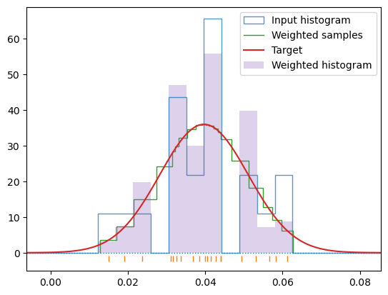
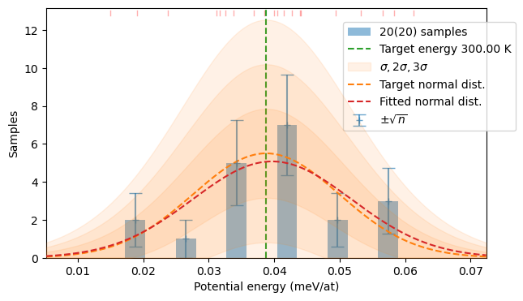
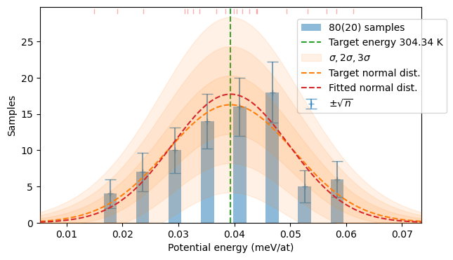

$ hecss-sampler -V
HECSS, version 0.5.26
High Efficiency Configuration Space Sampler
(C) 2021-2024 by Paweł T. Jochym
License: GPL v3 or later
$ hecss-sampler --help
Usage: hecss-sampler [OPTIONS] FNAME
Run HECSS sampler on the structure in the provided file (FNAME) Read the
docs at: https://jochym.github.io/hecss/
FNAME - Supercell structure file. The containing
directory must be readable by Vasp(restart).
Usually this is a CONTCAR file for a supercell.
Options:
-W, --workdir PATH Work directory
-l, --label TEXT Label for the calculations.
-T, --temp FLOAT Target temperature in Kelvin.
-w, --width FLOAT Initial scale of the prior distribution
-a, --ampl PATH Initialise amplitude correction from the file.
-s, --scale PATH Save amplitude correction history
-m, --symprec FLOAT Symmetry search tolerance.
-C, --calc TEXT ASE calculator to be used for the job. Supported
calculators: VASP (default)
-S, --setups TEXT setups parameter of the calculator to force use of the
particular variants of pseudopotentials in the
calculations. By default pseudopotentials are guessed
from the POTCAR in the supercell directory.
-n, --nodfset Do not write DFSET file for ALAMODE
-d, --dfset TEXT Name of the DFSET file
-N, --nsamples INTEGER Number of samples to be generated
-e, --neta INTEGER Number of samples for width scale estimation
-c, --command TEXT Command to run calculator
-k, --nwork INTEGER Number of parallel workers to run (0=unlimited)
-p, --pbar Do not show progress bar
-V, --version Show the version and exit.
-h, --help Show this message and exit.
CLI
The command line interface for the HECSS sampler
Command line hecss sampler
The HECSS sampler can be also used from the command line using hecss-sampler command:
To use it you need to prepare:
run-calcscript which should start the VASP calculation. You need to put this script in the root of your project tree. The example of such a script is included in the source asrun-calc.example. :
#!/bin/bash
# This script should run vasp in current directory
# and wait for the run to finish.
#
# A generic line using SLURM would look like this:
#
# sbatch [job_params] -W vasp_running_script
#
# The "-W" param makes the sbatch command wait for the job to finish.
JN=`pwd`
JN=`basename ${JN}`
# Partition of the cluster
PART=small
# Number of nodes
N=1
# Number of MPI tasks
ntask=64
# Name the job after directory if no label is passed as first argument
if [ "${1}." != "." ]; then
JN=${1}
fi
sbatch -W -J ${JN} -p $PART -N $N -n $ntask run-vasp-scriptA directory with fully converged and optimized supercell structure which can be read in by the ASE
Vasp(restart=...)commandA directory for the generated samples.
The directory tree may look like this:
my_project ----- sc
|
+-- T_100
|
+-- T_200
|
+-- ...
|
+-- run-calcYou execute the sampler from the my_project directory (remember to activate your virtual environment first). Generation of N=30 samples at T=100K:
~$ cd my_project
~$ hecss_sampler -W T_100 -T 100 -N 30 -c ./run-calc sc/CONTCARThe above command will put the generated samples inside the T_100 directory, together with the DFSET file with displacement-force data extracted from the calculation. The calculation may take a long time. Thus it is advisable to execute the hecss command inside screen (or some similar terminal multiplexer) to prevent the break of the calculation in case of session disconnection. The hecss command shows a progress to guide you through the calculation (ETA, time/it, data about last sample etc.). The example run is included at the bottom of this document.
Width scale estimation
Calling the sampler with N=0 runs only width scale (eta) estimation procedure for the temperature range 0-T Kelvin. The calculated value may be used as the -w parameter in subsequent calculations. Possibly even for temperatures outside of this range.
$ hecss-sampler -W TMP/tmp300lbafg -T 1000 -N 0 -e 10 -c ./run-calc.sh -k 0 example/VASP_3C-SiC/1x1x1/sc_1x1x1/CONTCAR
HECSS (0.5.26)
Supercell: example/VASP_3C-SiC/1x1x1/sc_1x1x1/CONTCAR
Temperature: 1000.0K
Work directory: TMP/tmp300lbafg
Calculator: VASP
Setups guessed from example/VASP_3C-SiC/1x1x1/sc_1x1x1/POTCAR: {'C': '', 'Si': ''}
Estimating width scale.
Width scale from 10 pts.: 1.83+/-0.27
Width scale estimation run (N<2). Not running sampling.
Calculating amplitude correction data
The amplitude correction data can be saved into the file (-s parameter) and used in subsequent calculations (see below). This will speed up the initial equilibration of the degrees of freedom. This will be merged with eta estimation in future versions.
$ hecss-sampler -W TMP/tmp300lbafg -T 300 -N 10 -w 1.85 -c ./run-calc.sh -s scale.dat example/VASP_3C-SiC/1x1x1/sc_1x1x1/CONTCAR
HECSS (0.5.26)
Supercell: example/VASP_3C-SiC/1x1x1/sc_1x1x1/CONTCAR
Temperature: 300.0K
Work directory: TMP/tmp300lbafg
Calculator: VASP
Setups guessed from example/VASP_3C-SiC/1x1x1/sc_1x1x1/POTCAR: {'C': '', 'Si': ''}
Sampling configurations
Generating distribution centered at: 291.342 K
Average width scale (9 pnts): 1.8+/-0.00404
Calculate initial amplitude correction
By saving the amplitude correction coefficients into the file with -s option of the sampler we can initialise following calculations with proper relations of relative displacement amplitudes. This may be also used to continue the calculations with minimal startup overhead.
$ calculate-xscale --help
Usage: calculate-xscale [OPTIONS] SUPERCELL SCALE
Calculate initial values for amplitude correction coefficients from the scale
file data for the specified supercell.
Options:
-o, --output PATH Write output to the file.
-s, --skip INTEGER Skip this number of samples at the beginning
-V, --version Show the version and exit.
-h, --help Show this message and exit.
$ calculate-xscale -o TMP/tmp300lbafg/iscale.dat -s 10 example/VASP_3C-SiC/1x1x1/sc_1x1x1/CONTCAR TMP/tmp300lbafg/T_300.0K/scale.dat
Done. The initial scale saved to: TMP/tmp300lbafg/iscale.dat
Continue the calculation
$ hecss-sampler -W TMP/tmp_jaucdpz -T 300 -N 10 -w 1.85 -c ./run-calc.sh -s scale.dat -a TMP/tmp300lbafg/iscale.dat example/VASP_3C-SiC/1x1x1/sc_1x1x1/CONTCAR
HECSS (0.5.26)
Supercell: example/VASP_3C-SiC/1x1x1/sc_1x1x1/CONTCAR
Temperature: 300.0K
Work directory: TMP/tmp_jaucdpz
Calculator: VASP
Setups guessed from example/VASP_3C-SiC/1x1x1/sc_1x1x1/POTCAR: {'C': '', 'Si': ''}
Sampling configurations
Generating distribution centered at: 322.607 K
Average width scale (9 pnts): 1.87+/-0.00431
Sampling re-shaping
The reshaper of the sample set to any given temperature.
$ reshape-sample --help
Usage: reshape-sample [OPTIONS] DFSET [T]
Reshape the sample to the normal distribution centered around mean energy
(temperature), or around provided temperature T (Kelvin). The reshaping is
done by adjusting weighting of the samples by repeating the ones which should
be up-weighted. The parameters are the variants of the weighting algorithm
(see the docs)
The procedure reads and produces a file with in the DFSET format. For the
'check' function to work the parameter must point to the root directory of
the calculated samples. The checked directories will be in the form:
'{root}/nnnn'.
In check mode the raw file is *not* reshaped, just filtered.
Options:
-N, --nmul INTEGER Sample length multiplier (default: 4)
-p, --prob FLOAT Probability treshold (default: 0.25)
-w Force non-zero weights for samples above probability
treshold. (default: True)
-b Border samples account for the rest of domain
-c, --check PATH Check and skip unconverged samples in calc directory.
-o, --output PATH Write output to the file.
-d Plot debug plots
-V, --version Show the version and exit.
--help Show this message and exit.
$ reshape-sample -d -o TMP/DFSET.dat TMP/DFSET_raw.dat

Done. Distribution reshaped to 306.97 K.
Done. Saving to: TMP/DFSET.dat
$ reshape-sample -N 1 -w -d -o TMP/tmp300lbafg/T_300.0K/DFSET.dat --check TMP/tmp300lbafg/T_300.0K/smpl TMP/tmp300lbafg/T_300.0K/DFSET.dat.raw
Checking convergence in TMP/tmp300lbafg/T_300.0K/smpl/nnnn
Number of converged calculations: 10/10
Rewriting the raw dfset (skipping reshape).
Done. Saving to: TMP/tmp300lbafg/T_300.0K/DFSET.dat
Command line statistics monitoring
This simple command line interface to the statistics plotting function allows for quick monitoring of the running calculation. If the sixelplot package is installed it is even possible to plot hi-res plots in the remote terminal supporting sixel standard (e.g. mlterm, xterm on Linux, iterm2 on OSX).
$ plot-stats --help
Usage: plot-stats [OPTIONS] DFSET [T]
Plot the statistics of the samples from the DFSET file. Use T(K) as a
reference target temperature. Optionally write out the plot to the output
graphics file.
Options:
-n, --sqrn Show sqrt(N) bars on the histogram.
-s, --sixel Use SixEl driver for terminal graphics.
-w, --width FLOAT Width of the figure.
-h, --height FLOAT Height of the figure.
-o, --output PATH Write output to the file.
-x Make plot in an interactive window
-V, --version Show the version and exit.
--help Show this message and exit.
$ plot-stats -n -w 7 -h 4 TMP/DFSET_raw.dat 300

$ plot-stats -n -w 7 -h 4 TMP/DFSET.dat

$ plot-stats -n -w 7 -h 4 example/VASP_3C-SiC_calculated/2x2x2/T_1200K/DFSET.dat 1200
Command line phonon monitoring
This simple command line interface to the phonon plotting function allows for quick monitoring of the phonon calculation. If the sixelplot package is installed it is even possible to plot hi-res plots in the remote terminal supporting sixel standard (e.g. mlterm, xterm on Linux, iterm2 on OSX).
$ plot-bands --help
Usage: plot-bands [OPTIONS] [BANDS]...
Plot the phonon dispersion from the file generated by ALAMODE. Optionally
write out the plot to the output graphics file.
Options:
-s, --sixel Use SixEl driver for terminal graphics.
-n, --nodecor Decorate the plot.
-w, --width FLOAT Width of the figure.
-h, --height FLOAT Height of the figure.
-o, --output PATH Write output to the file.
-l, --label TEXT Label(s) for the plot. Comma-separated list
-x Make plot in an interactive window
-V, --version Show the version and exit.
--help Show this message and exit.
$ plot-bands -w 7 -h 4 -l '300K,600K,3000K' example/VASP_3C-SiC_calculated/2x2x2/T_300K/phon/cryst.bands example/VASP_3C-SiC_calculated/2x2x2/T_600K/phon/cryst.bands example/VASP_3C-SiC_calculated/2x2x2/T_3000K/phon/cryst.bands